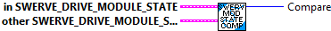
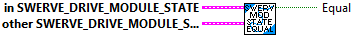

Compares two swerve module states. One swerve module is "greater" than the other if its speed is higher than the other.
Parmeters:
- this Module State
- other Module State - The other swerve module.
Returns:
- compare - comparison result where
1 if this is greater,
0 if both are equal,
-1 if other is greater.

Compares two swerve module states. Returns TRUE if they are equal.
Parmeters:
- this Module State
- other Module State - The other swerve module.
Returns:
- equal -- boolean -- Returns TRUE if both module states are equal.
Get the individual speed (meters/sec) and angle (radians) components of the Module State data cluster.
Parmeters:
- Module State
Returns:
- Speed -- Module speed (Meters/Sec)
- Angle -- Module angle (Radians)

Constructs a SwerveModuleState.
Parameters:
- speed - The speed of the wheel of the module. (Meters/Sec)
- rotation -The angle of the module.
Returns:
- SwerveDriveModuleState - Data structure

Minimize the change in heading the desired swerve module state would require by potentially reversing the direction the wheel spins. If this is used with the PIDController class's continuous input functionality, the furthest a wheel will ever rotate is 90 degrees.
Parmeters:
- desired Module State
- current module angle (rotation)
Returns:
- optimized Module State